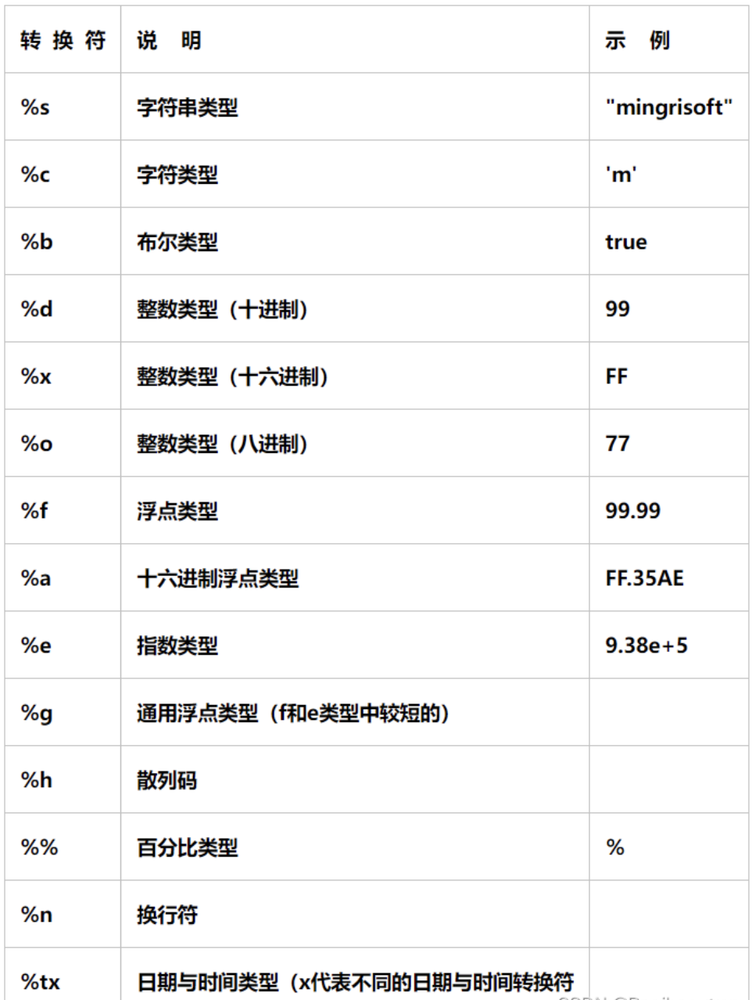
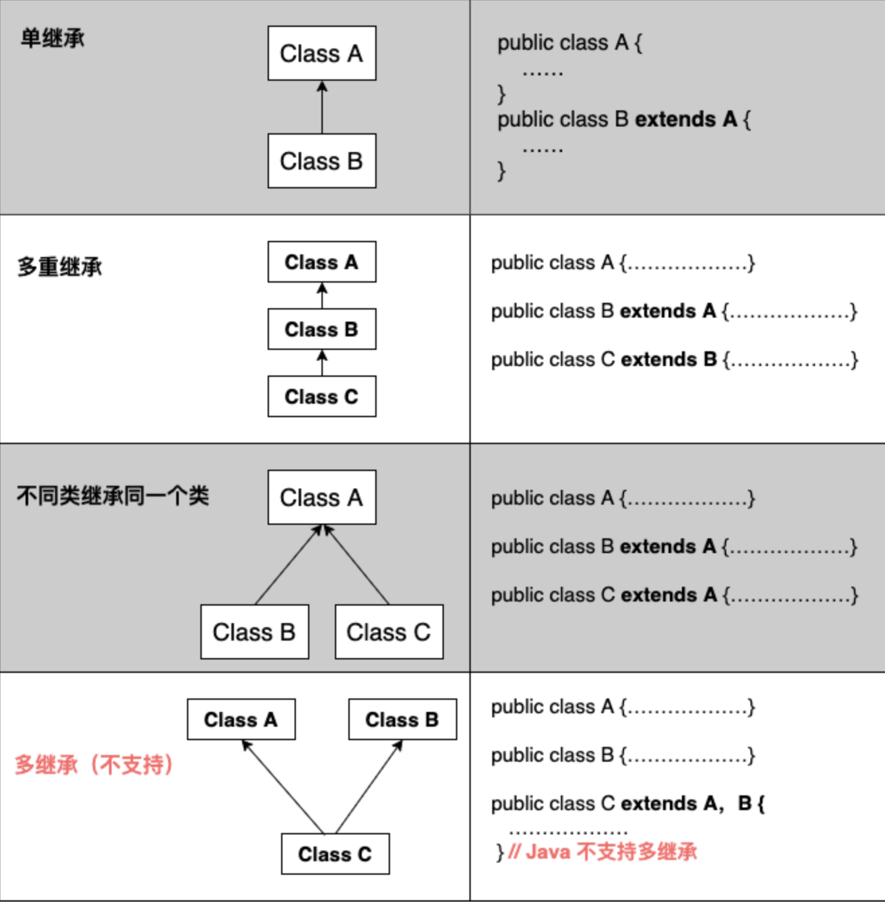
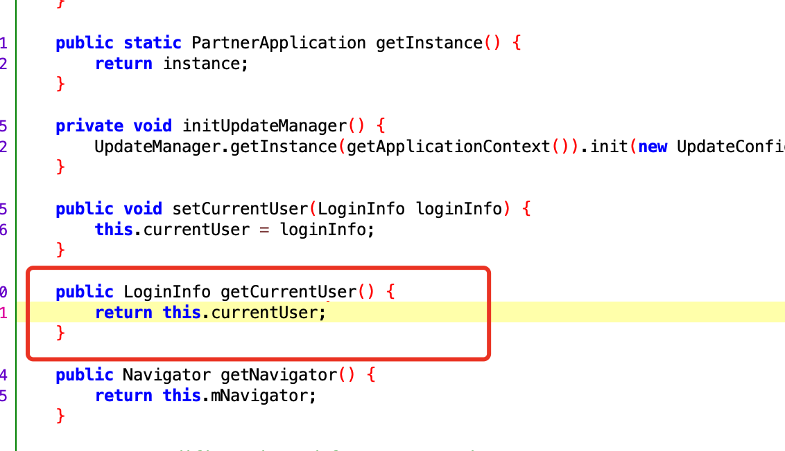

六、java基础-01
一、Java环境搭建
1、Java介绍
#1 咱们在之前的jadx 反编译apk 的过程中，发现--》反编译回来的代码---》java代码--》看不懂代码--》无法逆向--》接下来我们要学习java 基础
-目标：不是为了做java开发
-目标：只是为了看懂 反编译回来的java加密逻辑
#2 java 编译型语言--》区分于 Python
python，js，php：解释型语言
开发，运行：都需要python解释器，天然跨平台，没有编译的过程
如果要把代码给别人--》别人可以看到我们的源代码
java：编译型语言
开发需要jdk环境，java源代码--》需要编译--》字节码文件--》字节码文件运行在java虚拟机之上
跨平台--》java的字节码文件运行在 虚拟机之上--》不同平台安装不同平台的虚拟机，java字节码可以顺利运行
java运行是字节码文件，不是原代码--》不会泄露掉真正的java代码
【字节码文件可以反编译--》逆向】
c/c++/go:编译型语言
需要编译--》区别于java--》直接编译成 可执行文件（win:exe,mac,Linux:这个平台可执行文件）
如果在win平台上编译后的可执行文件，无法运行在 mac，linux上的
只能在不同平台编译---》运行在不同平台
好处：一旦编译过后，就是可执行文件，不需要额外安装其他的东西
坏处：不跨平台，需要在不同平台编译
# 3 java到的体系
-Java se：java基础--》变量，方法，面向对象，包，文件操作，并发，网络
-学会它--》做java开发--》安卓开发
-必学
-java ee：java web方向，jsp，请求与响应--》java工作基本上都是这个方向
java工程师---》本质大部分都是java EE工程师
ssh，ssm，SpringBoot，SpringCloud：spring公司的框架，方便做java ee
-java me:java手机方向开发--》不是安卓--》山寨机--》应用--》打开--》java小图标--》那些软件是用java me写的--》没有这个方向了
#4 jdk jre jvm
-jdk:Java Development Kit:java集成开发工具包--》java开发者必须下载安装这个软件，装在不同平台--》包含 jre，和内置的jar包
-jre:Java Runtime Environment 即Java运行环境--》java程序要运行，必须安装这个软件，装在不同平台上
好多人运行java软件，直接装了jdk
-jvm：java虚拟机，java的字节码文件必须运行在java虚拟机之上
-正是因为jvm的跨平台，可以装在不同操作系统上，java程序是跨平台的
-jadx 反编译工具--》只需要装jre即可--》他就可以运行，直接装了jdk
因为jdk包含jre
-安卓手机：虚拟机不是jvm，谷歌公司自己开发的虚拟机
# 4 如果jdk安装完成--打开cmd--输入
java -version
java version "1.8.0_371"
Java(TM) SE Runtime Environment (build 1.8.0_371-b11)
Java HotSpot(TM) 64-Bit Server VM (build 25.371-b11, mixed mode)
# 5 关于jdk版本
-JDK 22 最新
-咱们用jdk 1.8
-百分之85以上的做java的公司，都在用jdk 1.8 --》jdk8
-使用jadx反编译回来到的代码--》都反编译成jdk1.8的代码
# 6 java 是 sun公司推出的---》被甲骨文 收购了--》oracle 官网下载
-java 本来是开源免费的
-被oracle收购后--》oracle收费
-jdk源代码 开源的
-更新，加新功能---》oracle要收费
-第三方基于开源代码编译成自己的jdk
-oracle JDK # 非商业用途也免费
-open JDK # 免费的
-毕昇jdk
2、安装jdk--配置环境变量
#1 安装 把老师给的安装包，一路下一步安装即可
-安装完--》弹出一个是否安装jre提示
-可以装可以不装：
-不装：jdk中自带jre--》不用装了
-装了：在别的位置又有个jre的环境
# 2 配置环境变量 --》正常可以用--》但是作为专业的java开发--》咱们需要配一下
2.1 新建 JAVA_HOME D:\Program Files\Java\jdk-1.8 # java的安装目录
-以后JAVA_HOME 就代指后面的路径
2.2 新建一个 CLASSPATH
CLASSPATH .;%JAVA_HOME%\lib\dt.jar;%JAVA_HOME%\lib\tools.jar;
2.3 path中加入--》可执行文件，在任意路径下执行都会有反应
%JAVA_HOME%\bin
%JAVA_HOME%\jre\bin


3、第一个HelloWorld
# jdk -->java 开发环境搭建好了
# 写一个java程序了
# 没有编辑器：python：pycharm java：IDEA,用记事本写,notepad++(自己装)
# 1 在文件中写入
public class HelloWorld {
public static void main(String[] args) {
System.out.println("hello world");
}
}
#2 编译代码 生成字节码文件 HelloWorld.class
javac HelloWorld.java
# 3 执行字节码文件
java HelloWorld

3、编辑器-新建项目
# 以后像Pycharm一样，在编辑器上开发
# 1 Eclipse https://www.eclipse.org/downloads/
Eclipse是一个免费的开源Java IDE，提供了丰富的功能和插件扩展。它支持Java应用程序、Web应用程序和企业级应用程序的开发，并具有强大的代码编辑、调试和测试工具。
# 2 My Eclipse https://www.genuitec.com/products/myeclipse/
MyEclipse是一个专为Java开发而设计的集成开发环境（IDE），它是Eclipse IDE的一个商业化版本。MyEclipse提供了许多功能和工具，旨在提高Java开发人员的生产力和效率
# 3 IntelliJ IDEA：https://www.jetbrains.com/idea/download/other.html
# 捷克 JetBrains公司--》IDEA--》编辑器全家桶
-Pycharm
-Goland
-Clion
-IDEA
-WebStorm
IntelliJ IDEA是一种商业化的Java IDE，也有免费的社区版可用。它提供了智能代码完成、代码检查和重构等功能，支持Java开发以及其他相关技术，如Spring和Hibernate，同属于Jetbrains系列，使用习惯跟Pycharm类似，我们选择此编辑器
# vscode：微软出的，免费
-java，python，go，前端。。。
# 我们使用idea，使用率高，跟Pycharm用起来很像
4、安装-破解idea
# 1 安装，科学使用（跟pycharm科学使用一样）
-ideaIU-2023.1.3.exe 一路下一步，跟pychrm安装一模一样
# 2 先打开 idea，让你输入 验证，咱们没有（花钱）--》关闭软件
# 3 运行老师给的激活工具（运行脚本）
等着它弹出 done
# 4 打开idea，输入激活码，就可以了
-pycharm
-Clion
-IDEA
-GOland

5、新建项目


二、Java语法快速入门
1、程序的入口
// java程序入口为类中的static的viod的main函数，参数固定为字符串数组
public static void main(String[] args) {
//代码，程序从这里开始执行的
}
// python
if __name__=="__main__":
代码
2、文件名
# 1 文件中【HellWorld.java】,只能有一个public类，并且 文件名 必须和 类名 一致
# 2 文件中可以有多个类，但是只能有一个public类，并且public类的名字需要和文件名一致
# 3 如果文件中，有多个类，并且不用public修饰，文件名可以是任意类型
3、类规范
public static void main(String[] args){
}
### 1 类名规范
类名首字母必须大写，使用驼峰命名(Python也是)
Hello UserInfo PersonApplication
### 2 类前有修饰符
-public
-不写（default）
### 3 类中成员（变量，方法），修饰符
public、private、protected、default（不写）
-public：公有的,所有其他类中都可以使用
-private：私有的，只有在当前类中可以使用
-protected：受保护的，只有在当前包下的类中可以使用
-default(不写)：默认
### 4 static 静态成员方法
无需类实例化，直接可以调用--》等同于python的类方法，使用classmethod修饰的
### 5 void 没有返回值
四、基本语法
1、注释(跟js注释一样，区别于python)
# 1 单行注释
代码前加 //
快捷键：【注释 ctrl+/ 】 【 取消注释 ctrl+/ 】 跟pycharm一样
# 2 多行注释
/*
多行注释
多多行注释
可以换行
*/
快捷键：【注释 ctrl+shift+/ 】 【取消注释 ctrl+shift+\ 】
# 3 文档注释
包含在“/**”和“*/”之间，也能注释多行内容，一般用在类、方法和变量上面，用来描述其作用。注释后，鼠标放在类和变量上面会自动显示出我们注释的内容
/**
*
* @param a
* @param b
*/
public static void add(int a, int b) {
System.out.println(a + b);
System.out.println(name);
}
2、变量和常量
### 变量
// 1 定义变量
// 类型 变量名 = 变量值
String name = "justin"; //定义
name = "彭于晏"; // 修改值
System.out.println(name); // 在控制台打印
int age =19;
System.out.println(age);
String hobby;
hobby="篮球";
### 常量--》恒定不变，一旦定义，以后不能改 final 关键字修饰
final String school="清华大学";
// school="北大"; // 以后不能改
System.out.println(school);
3、输入和输出
# 输出，在控制台打印
// 输出--》控制台打印
System.out.println("hello"); // 打印并换行
System.out.print("world"); // 打印，不换行
System.out.print("justin");
System.out.println();
String name="justin";
System.out.printf("变量的值是：%s\n",name);
# 输入，接受控制台输入 python中的input
import java.util.Scanner;
System.out.print("请输入index名字：");
Scanner input=new Scanner(System.in);
String inputName=input.nextLine();
System.out.printf("您输入的名字是：%s",inputName);
<img src="imgs/day06-java基础01.assets/image-20230627161012106.png" alt="image-20230627161012106" style="zoom:50%;" />

4、条件语句
# if -----else if ----- else
# 用户输入分数，打印 及格，良好，优秀
import java.util.Scanner;
public class Demo01 {
public static void main(String[] args) {
// 接受用户输入
System.out.print("请输入您的分数：");
Scanner scanner = new Scanner(System.in);
// int score=scanner.nextLine();
int score = Integer.valueOf(scanner.nextLine()); // 强制类型转换，字符串转成int
if (score >= 90 && score <= 100) {
System.out.println("优秀");
} else if (score >= 70 && score < 90) {
System.out.println("良好");
} else if (score >= 60 && score < 70) {
System.out.println("及格");
} else {
System.out.println("不及格");
}
}
}
5、循环语句
5.1 while循环
// 打印出0--9
public class Demo02 {
public static void main(String[] args) {
int count = 0;
while (count < 10) {
System.out.println(count);
count+=1;
}
}
}
5.2 do while 循环
int count = 0;
// 无论条件是否成立，do都会至少执行一次
do {
System.out.println(count);
count++;
} while (count < 10);
5.3 for循环（用的最多）
for (int i = 0; i <10 ; i++) {
System.out.println(i);
}
break和continue跟其他语言完全一样
五、数据类型
- 字节类型 byte
- 整数类型
- byte 带符号字节型 8位 -128 ~ 127
- short 带符号字节型 16位 -32768 ~ 32767
- int 带符号字节型 32位 -231 -2147483648 ~ 2147483647
- long 带符号字节型 64位 -263 -9223372036854775808 ~ 9223372036854775807
- 小数类型：浮点型
- float
- double
- 字符串类型
- char
- 字符串类型
- String
- 数组类型
- int[]
- String[]
- 布尔类型
- boolean
1、字节类型
// 1 字节类型
byte a='A';
System.out.println(a);
2、整数类型
// 2 整数类型
byte b=127;
// byte b=128; 不能超范围
System.out.println(b);
short v2=10000;
// short v3=32768; 不能超范围
int v4=323234324;
long v5=554534353424L;
3、小数类型
// 3 小数
float f=1.123456789f;
double d=1.1234567890987654321d;
System.out.println(f);
System.out.println(d);
4、字符类型
// 4 字符类型
char v1 = '中';
char v2 = 'a';
char v3 = '贾';
System.out.println(v3);
5、字符串类型
// 5 字符串类型-->不能用单引号
String name ="justin";
6、数组类型
// 连续存储内存空间
int[] i=new int[3];
i[0]=4;
i[1]=5;
i[2]=6;
System.out.println(Arrays.toString(i));
// String[] names=new String[4];
String[] names=new String[]{"justin","lqz"};
// names[0]="justin";
// names[1]="xx";
// names[3]="小红";
System.out.println(Arrays.toString(names));
7、布尔类型
boolean b=true;
b=false;
System.out.println(b);
六、python和java字节，字符，字符串比较
1、补充
字节：一个字节是8个比特位，一个英文字符 a 永远占一个字节， 一个中文字符，占多少字节，取决于编码方式 GBK编码：一个中文字符， 占2字节 utf8编码：一个中文字符，占3个字节
字符： 一个符号 比如： 中 国 ? ？ ！ a

2、java字符串常用方法
字符串的常用方法
取出指定位置字符
String v1="hello world 中国";
String v1="hello world 中国 ";
System.out.println(v1.charAt(12));
循环打印每个字符
for (int i = 0; i < v1.length() ; i++) {
System.out.println(v1.charAt(i));
}
去除字符串前后空白
System.out.println(v1.trim());
转大写
System.out.println(v1.toUpperCase());
转小写
System.out.println(v1.toUpperCase());
字符分割
String[] v5=v1.split(" ");
System.out.println(v5);
System.out.println(Arrays.toString(v5));
字符串替换
String v2=v1.replace("中","爱");
System.out.println(v2);
字符串切片-->x大夫 （见过了）
String v1="hello world 中国";
String v2=v1.substring(5,8);
System.out.println(v2);
比较字符串是否相等(会用)
boolean b=v1.equals("hello world 中国0");
System.out.println(b);
字符串是否包含
boolean b=v1.contains("中国0");
System.out.println(b);
以xx开头
System.out.println(v1.startsWith("he"));;
以xx结尾
System.out.println(v1.endsWith("国"));
3、java字符串拼接
字符串拼接
多个字符串 + 这种方式基本看不到，很low
String v1="中";
String s ="hello"+" world "+"中国";
python:没有隐士类型转换 s="中"+9 报错
System.*out*.println(s);
以后看到下面两种方案StringBuilder -->线程不安全的
StringBuilder sb=new StringBuilder();
sb.append("hello");
sb.append("world");
sb.append("中");
sb.append("国");
String v=sb.toString();
System.*out*.println(v);
StringBuffer -->线程安全的
StringBuffer sb=new StringBuffer();
sb.append("hello");
sb.append("world");
sb.append(name)
sb.append("中");
sb.append("国");
String v=sb.toString();
System.out.println(v);

4、java字节数组和字符串转换
1 个字节是 8个比特位
String v = "hello world 中国";
try{
// 转码可能会报错，需要异常捕获
byte[] b = v.getBytes("utf-8"); // 等同于 python 'hello world 中国'.encode('utf-8')
System.out.println(Arrays.toString(b)); // [104, 101, 108, 108, 111, 32, 119, 111, 114, 108, 100, 32, -28, -72, -83, -27, -101, -67]
byte[] b1 = v.getBytes("GBK"); // 等同于 python 'hello world 中国'.encode('GBK')
System.out.println(Arrays.toString(b1)); // [104, 101, 108, 108, 111, 32, 119, 111, 114, 108, 100, 32, -42, -48, -71, -6]
b[0] = 99;
// 字节数组转回字符串
String v1 = new String(b);
System.out.println(v1);
// 如果要改变字符串中某个位置的值，需要转成 字节数组，字符数组，，按位置改完，再转回字符串
}catch(Exception e){
}
总结
- 字符串转字节数组
java
String v="hello world 中国";
v.getBytes("utf-8"); // 以后会经常看到这个东西
- 把字节数组转回字符串
java
byte[] b =new byte[]{99,98,97}
String v1=new String(b,"utf-8");
5、java字符数组和字符串转换
一个符号，就是一个字符 中 ？
String v="hello 中国";
char[] c1=v.toCharArray();
System.out.println(c1);
System.out.println(c1[2]);
char[] c=new char[]{'h','e','l','l','o','中','国'};
String v=new String(c);
System.out.println(v);
System.out.println(v instanceof String); //判断这个变量的类型
总结
// 字符串转字符数组
String v="hello world 中国";
char[] c1=v.toCharArray();
// 把字符数组转回字符串
char[] c=new char[]{'h','e','l','l','o','中','国'};
String v=new String(c);
6、Python字节和字符串
实例
v1 = '彭于晏'
# 转成字节
v2 = v1.encode('utf-8')
print(v2) # 16进制展示 ，java的字符串转成字节数组后是用十进制展示
v3 = v1.encode('GBK')
print(v3) # 16进制展示 ，java的字符串转成字节数组后是用十进制展示
# 10 进制展示
v4 = [item for item in v2]
print(v4) #[229, 189, 173, 228, 186, 142, 230, 153, 143]
# 11 二进制展示
v5 = [bin(item) for item in v2]
print(v5)
# 16进制展示
v6=[hex(item) for item in v2]
print(v6)
v7=[hex(item)[2:] for item in v2]
print(v7)
# 字符
v1 = '彭于晏'
print(list(v1))
# java 中 字符串， 字节数组 字符数组
# python中 字符串 字节列表(16进制，2进制，10进制) 字符列表
7、java字节数组和python字符串转换(用)
实例
使用python，把它转成字符串
# 抓包和hook某app---》拿到 字节数组--》java的字节数组
# 使用python把它转成字符串
java:[-27, -67, -83, -28, -70, -114, -26, -103, -113]
# 补充：字节有无符号
Python字节无符号（不含负数）： 0 ~ 255
0 1 2 3 4 5 ... 127 128 129 130 ... 255
Java字节是有符号（含有负数）：-128 ~ 127
0 1 2 3 4 5 ...127 -128 -127 - 126 -125 .... -2 -1
# 彭于晏字符串--》字节数组
python：[229, 189, 173, 228, 186, 142, 230, 153, 143]
java： [-27, -67, -83, -28, -70, -114, -26, -103, -113]
# 写一个java中字节数组--》转python字符串的代码
逻辑是：数字大于0，不操作，小于0，加256
java的字节数组转python字符串
bb1 = [-27, -67, -83, -28, -70, -114, -26, -103, -113]
def java_arr_to_python_str(b):
num_list = bytearray()
for i in b:
if i < 0:
i = i + 256
num_list.append(i)
return num_list.decode('utf-8')
if __name__ == '__main__':
print(java_arr_to_python_str(bb1))
8、使用python将字符串与十进制数互转
# 原始中文字符串
original_str = "中国"
# 步骤 1：将字符串编码为字节序列
byte_sequence = original_str.encode('utf-8')
print(f"Byte sequence: {byte_sequence}") # 输出: b'\xe4\xb8\xad\xe5\x9b\xbd'
# 步骤 2：将字节序列转换为十进制整数列表
decimal_list = list(byte_sequence)
print(f"Decimal list: {decimal_list}") # 输出: [228, 184, 173, 229, 155, 189]
# 步骤 3：从十进制整数列表恢复原始字符串
byte_sequence_from_list = bytes(decimal_list)
print(byte_sequence_from_list)
recovered_str = byte_sequence_from_list.decode('utf-8')
print(f"Recovered string: {recovered_str}") # 输出: 中国
9、使用python将Java十进制数转换为字符串
java中字符串转换为十进制数组
python进行转换
逻辑是：数字大于0，不操作，小于0，加256
# java的字节数组转python字符串
decimal_list = [-27, -67, -83, -28, -70, -114, -26, -103, -113] # java字符串转换为十进制的值
# 因为
decimal_list = [i+256 for i in decimal_list if i<=0]
# 从十进制整数列表恢复原始字符串
byte_sequence_from_list = bytes(decimal_list)
print(byte_sequence_from_list)
recovered_str = byte_sequence_from_list.decode('utf-8')
print(f"Recovered string: {recovered_str}") # 输出: 彭于晏
七、 Java的Object类（用）
Object 类是所有类的父类
# 只要是父类的对象，子类的对象都可以赋值给它
Object obj=new Object()
# 假设有Person类
Person person = new Person()
obj=person
Object person = new Person()
# Object 类的对象，可以接收任意类的对象
# 泛指
Object类
Animal类
-Person--》人
-Dog---》狗
人是动物
狗是动物
Object a =new Person()
Object d=new Dog()
也是为了让你的函数参数可以接受更多的类型
2、Object类可以接收任意对象
public class Demo02 {
// 1 Object 类，是所有类的父类
// Object类可以接收任意对象
Person person = new Person();
// Object obj=person;
// Object obj="xxoo";
// Object obj=11;
Object obj = new String[]{"你好", "我们"};
}
// 定义一个Person类
class Person {
}
3、Object类的方法

# Object 类中的方法
-equals ：判断两个对象是否相等
-getClass：获取这个对象的具体类
-toString 把对象转成字符串
# Object类是所有类的父类---》所有类对象都会有这三个方法
# 后期咱们会有：
-getClass ：不知道对象具体类型，可以通过这个查看到具体的类型
Object obj= 对象;
obj.getClass()
-toString
Object obj= 对象;
System.out.println(obj.toString());
System.out.println(obj); # 内部调用obj.toString() 转成字符串，显示在控制台上了
4、获取Object对象的具体类型
// 3 获取Object对象的具体类型,虽然大家都是Object的对象，但是大家有具体类型
Object obj=11;
System.out.println(obj.getClass()); // class java.lang.Integer 当成是int即可
Object obj2="asdfasdf";
System.out.println(obj2.getClass()); // class java.lang.String
Object obj3=new Person();
System.out.println(obj3.getClass()); // class Person
// 4 通过 instanceof 判断类型
System.out.println("" instanceof String);
// Object obj4=99; // 表面上的类型是Object ，但它具体是Integer，但是我们不能把obj4当Integer，必须做强制类型转换才能用
// Object obj4="ssss";
Object obj4=new Person();
if (obj4 instanceof Integer){
System.out.println("obj4是Integer类型");
Integer i =(Integer) obj4; // 强制类型转换
System.out.println(i);
} else if (obj4 instanceof Person) {
System.out.println("obj4是Person类型");
Person p =(Person)obj4;
System.out.println(p);
}else if (obj4 instanceof String) {
System.out.println("obj4是String类型");
String s =(String)obj4;
System.out.println(s);
}

八、容器类型-List
List是一个接口，接口下面有两个常见的类型（目的是可以存放动态的多个数据）
- ArrayList，连续的内存地址的存储（底层基于数组，内部自动扩容） -> Python列表的特点
- LinkedList，底层基于链表实现（底层基于链表） -> Python列表的特点

1、 ArrayList 用法
// ArrayList ll =new ArrayList();
// ArrayList <Object>ll =new ArrayList<Object>(); // 不写默认是 Object类型
ArrayList <String>ll =new ArrayList<String>();
// ArrayList <Integer>ll =new ArrayList<Integer>();
// ArrayList 的常用操作
// 1 添加元素
ll.add("lqz");
ll.add("刘亦菲");
ll.add("迪丽热巴");
// 2 根据索引取值
String name=ll.get(1);
System.out.println(name);
// 3 修改某个位置元素
ll.set(0,"小红");
// 4 删除某个位置
ll.remove(0);
System.out.println(ll);
// 5 ll 的长度
System.out.println(ll.size());
// 6 是否包含
boolean b=ll.contains("小红");
System.out.println(b);
// 7 循环 两种方式
// 方式一
for (int i = 0; i <ll.size() ; i++) {
System.out.println(ll.get(i));
}
// 方式二：
for (String item:ll) {
System.out.println(item);
}
2、LinkedList
// 1.2 LinkedList 使用
LinkedList<String> ll =new LinkedList<String>();
// LinkedList 的常用操作
// 1 添加元素
ll.add("lqz");
ll.add("刘亦菲");
ll.add("迪丽热巴");
// 2 根据索引取值
String name=ll.get(1);
System.out.println(name);
// 3 修改某个位置元素
ll.set(0,"小红");
// 4 删除某个位置
ll.remove(0);
System.out.println(ll);
// 5 ll 的长度
System.out.println(ll.size());
// 6 是否包含
boolean b=ll.contains("小红");
System.out.println(b);
// 7 循环 两种方式
// 方式一
for (int i = 0; i <ll.size() ; i++) {
System.out.println(ll.get(i));
}
// 方式二：
for (String item:ll) {
System.out.println(item);
}
// 多的，在头部和尾部插入元素 --》ArrayList不能
ll.addLast("尾部");
ll.addFirst("头部");
System.out.println(ll);
九、容器类型-Set
# 反编译回来的代码几乎看不到
Set是一个**接口**，常见实现这个接口的有两个类，用于实现不重复的多元素集合。
- HashSet，去重，无序。
- TreeSet，去重，内部默认排序（ascii、unicode）【不同的数据类型，无法进行比较】。
代码实例
import java.util.HashSet;
import java.util.TreeSet;
public class Demo04 {
public static void main(String[] args) {
// 集合
// HashSet h =new HashSet();
// HashSet<String> h =new HashSet<String>();
TreeSet<String> h =new TreeSet<String>();
h.add("xxx");
h.add("xxx");
h.add("yyy");
System.out.println(h); //会去重
//判断元素是否存在
System.out.println(h.contains("xxx"));
// 删除元素
h.remove("xxx");
//长度
System.out.println(h.size());
}
}
十、容器类型-Map(后面会用)
Map是一个接口，常见实现这个接口的有两个类，用于存储键值对。
- HashMap，无序。
- TreeMap，默认根据key排序。（常用）
import java.util.*;
public class Demo05 {
public static void main(String[] args) {
// 1 定义HashMap
// HashMap hm=new HashMap(); //用的很少
// HashMap<String, String> hm = new HashMap<String, String>();
TreeMap<String, String> hm = new TreeMap<String, String>();
// 1.1 增加元素
hm.put("name", "justin");
hm.put("age", "19");
System.out.println(hm);
// 1.2 获取元素
System.out.println(hm.get("name"));
// 1.3 移除元素
// hm.remove("name");
System.out.println(hm);
// 1.4 大小
System.out.println(hm.size());
// 1.5 包含key value
System.out.println(hm.containsKey("name"));
System.out.println(hm.containsValue("19"));
// 1.6 替换
hm.replace("age", "88"); // hm["age"]=88
System.out.println(hm);
System.out.println("-------------------");
// 1.7 循环，三种循环方式
// 简单--》后面见不到
for (String key : hm.keySet()) { // 循环得到key，根据key拿到value值
System.out.println(hm.get(key));
}
System.out.println("-------------------");
// 方式二：
for (Map.Entry<String, String> item : hm.entrySet()) {
System.out.println(item.getKey());
System.out.println(item.getValue());
}
// 方式三：以后不会写--》后面讲到会带你回来回顾 这个方式可以循环map
Set s2 = hm.entrySet();
Iterator it2 = s2.iterator();
while (it2.hasNext()) {
Map.Entry<String, String> item = (Map.Entry) it2.next();
String key = item.getKey();
String value = item.getValue();
System.out.println(key);
System.out.println(value);
}
}
}
十一、面向的对象
1、类与的对象
# 现实生活中：
先有对象，再有类
张三这个人，李四这个人---》人类
小奶狗，小母狗---》狗类
# 程序中
先有类，再有对象
先定义人类--》实例化得到 张三，李四
先定义狗类--》实例化得到小奶狗，小母狗
# 如何定义类，如何实例化得到对象
##定义
// 1 定义类
class Person{
}
## 实例化得到对象
Person zhangsan=new Person();
Person lisi=new Person();
2、构造方法
public class Demo06 {
public static void main(String[] args) {
// 2 实例化得到对象
// Person zhangsan=new Person();
// Person lisi=new Person();
Person zhangsan=new Person("张三",19);
Person lisi=new Person("李四",99);
System.out.println(zhangsan.name);
System.out.println(lisi.name);
// 有参构造，无参构造
Person p=new Person(); // 触发无参构造
System.out.println(p.name);
Person p1=new Person("justin",19);
System.out.println(p1.name);
// 多个构造函数
Person p2=new Person("justin");
System.out.println(p2.name);
System.out.println(p2.age);
}
}
// 1 定义类
class Person{
// 构造方法---》类实例化的时候，会自动触发---》为对象传入属性
String name;
int age;
public Person(String name,int age){ //使用public修饰，没有返回值，跟类同名的 方法，称之为构造方法，类实例化的时候自动触发
// 放到对象中 python 的 __init__ self.name=name
//this.name=name this 就是python中的self
this.name=name;
this.age=age;
}
// 构造方法可以写多个
public Person(){ // 无参构造方法
this.name="默认名字";
this.age=0;
}
public Person(String name){ // 有参构造
this.name=name;
}
}
3、静态方法和成员方法
# 静态方法（static） 属于类的，类直接来调用
# 成员方法 属于对象的，对象来调用
public class Demo07 {
public static void main(String[] args) {
Dog dog = new Dog("小野狗");
String name = dog.showName();
System.out.println(name);
dog.run();
Dog.showDog();
}
}
class Dog {
String name;
public Dog(String name) {
this.name = name;
}
// 定义方法--》成员方法，属于对象，是对象来 调用的
// 返回狗名字+傻狗方法
public String showName() {
return this.name + "--傻狗";
}
// 狗走路方法，没有返回值
public void run() {
// 能不能拿到狗名字
System.out.print(this.name);
System.out.println("狗走路");
}
// 静态方法--->给类来用的
public static void showDog(){
// 拿不到this,类用，没有对象
System.out.println("测试测色");
// System.out.println(this.name);
}
}
4、继承--重载和重写
# java 只允许单继承
public class Demo08 {
public static void main(String[] args) {
Cat cat = new Cat();
// cat.run(); //cat 调用父类的方法，子类中没有，会调用父类
// cat.run(); // cat 会调用自己的run方法
cat.run(); //没传参数，会触发没有参数的run方法
cat.run("xxx"); //传参数，会触发有参数的run方法
}
}
class Animal {
public void run() { // 成员方法run
System.out.println("动物走路");
}
}
// 定义猫，继承Animal
class Cat extends Animal {
// 重写run方法----》重写
@Override // 写不写都行，自动生成
public void run() { // 在继承关系下，把父类方法写一遍，这个叫重写方法
super.run(); // 调用父类中的run方法
System.out.println("猫走路");
}
public void run(String name) { // 类中，只要函数名一样，但是参数和返回值不一样，这个叫重载方法
System.out.print(name);
System.out.println("重载方法");
}
}
// 重载和重写的区别？
//在继承关系下，把父类方法写一遍，这个叫重写方法，参数和返回值必须跟父类的一模一样
// 类中，只要函数名一样，但是参数和返回值不一样，这个叫重载方法 (无论是否有继承关系)
十二、面向对象之类与对象
1、说明
# 1 类 与 对象
-现实生活中，先有一个个对象：小奶狗，小野狗---》归类为 狗 类
-代码中:先有类，类实例化得到对象
# 2 类与对象解释
# 类：
类是实体对象的概念模型，是笼统的、不具体的，比如人类，动物类，鸟类
类是描述了一组有相同特性（属性）和相同行为（方法）的一组对象的集合
# 对象：
对象又称为【实体】，是类具体化的表现，如人类中有：厨师，学生，老师
每个人对象都具有：姓名、年龄和体重这些属性，但是每个对象的姓名年龄又不相同
每个对象都具有：说话，走路的方法
# 3 java是完全的面向对象，没有面向过程
所有代码都在类中定义---》java程序有入口--》类下main方法
2、类定义规范
// Java中类的定义规范
// []内可以省略，|表示或单两个关键字不能同时出现
[public] [abstract|final] class 类名class_name [extends 继承的类名] [implements 实现的接口名] {
// 定义成员属性
属性类型1 属性名1; // String name;
属性类型2 属性名2; // int age;
// 定义静态属性（类属性）
static 属性类型 属性名;
// 定义成员方法(对象方法，对象来调用的方法)
public int add(int a,int b){
return a+b;
}
// 定义静态方法（类方法，类来调用）
public static void speak(){
System.out.println("说话");
}
}
// 解释
public ：表示 公有 的意思。如果使用 public 修饰，则可以被其他类和程序访问。每个 Java 程序的主类都必须是 public 类，作为公共工具供其他类和程序使用的类应定义为 public 类
abstract ：类被 abstract 修饰，则该类为抽象类，抽象类不能被实例化，但抽象类中可以有抽象方法（使用 abstract 修饰的方法）和具体方法（没有使用 abstract 修饰的方法）。继承该抽象类的所有子类都必须实现该抽象类中的所有抽象方法（除非子类也是抽象类）
final ：如果类被 final 修饰，则不允许被继承
class ：声明类的关键字
class_name ：类的名称
extends ：表示继承其他类
implements ：表示实现某些接口
3、实例
public class Demo01 {
public static void main(String[] args) {
System.out.println(Person05.school);// 静态属性，只能类用
System.out.println(new Person05().name);// 成员属性，对象用
Person05.showAge();
new Person05().showName();
Person05 p=new Person05();
p.showName();
}
}
// 举例
abstract class Person01{}
final class Person02{}
class Person03 extends Person01{}
// class Person04 implements 接口{}
class Person05{
//成员属性--》给对象用的
String name;
int age;
// 静态属性-->给类用的
static String school;
// 成员方法-->给对象用的-->String 表示返回值类型是String
public String showName(){
return "justin";
}
// 静态方法--》给类用的-->void 表示没有返回值，如果有返回值，必须声明返回值类型
public static void showAge(){
System.out.println(19);
return;
}
}
4、 Java类的属性
// 刚刚讲了 在类中可以定义属性
// 语法
[public|protected|private] [static][final] <变量类型> <变量名>
// 解释
public protected private ：用于表示成员变量的访问权限--》一会详细讲
static ：表示该成员变量为类变量，也称为静态变量
final ：表示将该成员变量声明为常量，其值无法更改
变量类型 ：表示变量的类型
变量名：表示变量名称
[public|protected|private] [static][final] 这些是既可以修饰类 又可以修饰属性吗
public ,final abstract 修饰类
public,protected,private static final 修饰属性
public class Demo02 {
// java类中的属性
}
class Person06{
public String name;
protected int age;
private String hobby;
public static String school;
protected static int age1;
public static final String xx="asdfasd"; // 常量
static final String yy="saadfas"; // 类来用的常量
final String zz="asdf"; //对象来用的常量
}
5、java类中的方法(给对象的方法，给类的方法)
// 语法
[public|private|protected] [abstract] [static] <void|return_type><方法名>([参数]) {
// 方法体
}
// 解释
public private protected ：表示成员方法的访问权限
static ：表示限定该成员方法为静态方法，一些公共方法，咱们可以定义为静态的
final ：表示限定该成员方法不能被重写或重载
abstract ：表示限定该成员方法为抽象方法。抽象方法不提供具体的实现，并且所属类型必须为抽象类
public class Demo03 {
public static void main(String[] args) {
// 1 PrintName 的使用
Person07 p7=new Person07(); // 实例化得到的对象
p7.name="justin";// 给对象属性赋值
p7.PrintName();// 打印对象的方法
//2 DDD的使用--类来调用类的方法
Person07.DDD();
// 3 调用add
int res=Person07.add(4,5);
System.out.println(res);
// 4 调用add1
new Person07().add1(6,7);
}
}
class Person07{
public String name;
// 1 打印对象名字方法
public void PrintName(){
System.out.println(this.name);
}
public static void DDD(){
System.out.println("asdfasdf");
}
public static int add(int a,int b){
return a+b;
}
public int add1(int a,int b){
return a+b;
}
}
6、构造方法-->很特殊
// 构造方法与类同名，没有返回值，不需要void关键字，可以有多个，表示多种构造方式
public class Demo04 {
public static void main(String[] args) {
// 1 实例化时候会调用哪个构造方法拿？根据参数决定
Person08 p8=new Person08();
System.out.println(p8.name);
Person08 p88=new Person08("justin");
System.out.println(p88.name);
Person08 p888=new Person08("justin",88);
System.out.println(p888.name);
System.out.println(p888.age);
}
}
class Person08{
public String name;
public int age;
public Person08(){
this.name="默认值";
this.age=99;
}
public Person08(String name){
this.name=name;
}
public Person08(String name,int age){
this.name=name;
this.age=age;
}
// @Override
// public String toString() {
// return this.name;
// }
}
7、this 关键字
// 只能写在类中方法中，但是不能是static修饰的方法--》可以是成员方法或构造方法
// this 代指当前实例对象，等同与python的self，只不过python需要显示的传，而this不需要
public class Demo05 {
// **********this关键字*************
public static void main(String[] args) {
Person09 p9=new Person09();
p9.showName();
p9.name="彭于晏";
p9.showName();
}
}
class Person09{
public String name;
public Person09(){ //构造方法中使用this
this.name="默认值";
}
public void showName(){//成员方法中使用this
System.out.println(this.name);
}
}
8、访问控制修饰符
# public protected public 访问权限控制修饰符
-成员属性
-成员方法
-静态属性
-静态方法
| 访问范围 | private | friendly(默认) | protected | public |
|---|---|---|---|---|
| 同一个类 | 可访问 | 可访问 | 可访问 | 可访问 |
| 同一包中的其他类 | 不可访问 | 可访问 | 可访问 | 可访问 |
| 不同包中的子类 | 不可访问 | 不可访问 | 可访问 | 可访问 |
| 不同包中的非子类 | 不可访问 | 不可访问 | 不可访问 | 可访问 |
//1 private
用 private 修饰的类成员，只能被该类自身的方法访问和修改，而不能被任何其他类（包括该类的子类）访问和引用。因此，private 修饰符具有最高的保护级别
//2 friendly（默认）
如果一个类没有访问控制符，说明它具有默认的访问控制特性。这种默认的访问控制权规定，该类只能被同一个包中的类访问和引用，而不能被其他包中的类使用，即使其他包中有该类的子类。这种访问特性又称为包访问性（package private）
//3 protected
用保护访问控制符 protected 修饰的类成员可以被三种类所访问：该类自身、与它在同一个包中的其他类以及在其他包中的该类的子类。使用 protected 修饰符的主要作用，是允许其他包中它的子类来访问父类的特定属性和方法，否则可以使用默认访问控制符。
//4 public
当一个类被声明为 public 时，它就具有了被其他包中的类访问的可能性，只要包中的其他类在程序中使用 import 语句引入 public 类，就可以访问和引用这个类
9、静态变量和静态方法(static)
// 在类中，使用 static 修饰符修饰的属性（成员变量）称为静态变量，也可以称为类变量，常量（final）称为静态常量，方法称为静态方法或类方法，它们统称为静态成员，归整个类所有。
// 静态成员不依赖于类的特定实例，被类的所有实例共享，就是说 static 修饰的方法或者变量不需要依赖于对象来进行访问，只要这个类被加载，Java 虚拟机就可以根据类名找到它们
//********************静态变量*************************
类的成员变量可以分为以下两种：
静态变量（或称为类变量），指被 static 修饰的成员变量
实例变量(对象变量)，指没有被 static 修饰的成员变量
//********************静态方法********************
类的成员方法也可以分为以下两种：
静态方法（或称为类方法），指被 static 修饰的成员方法
实例方法（对象的方法），指没有被 static 修饰的成员方法
老师 可以将 （类 对象 属性 方法 成员方法 构造方法 静态属性 静态方法 ）做个总结吗？ 单个听的时候能理解，混起来这么多名词有点乱了！
// 1 类 class 定义的
// 2 对象 类实例化得到 ---》Person p =new Person();
// 3 属性，在类内部定义的变量:成员变量，静态变量，常量
class Person{
String name; // 成员变量--》对象的
static String school // 静态变量--》类来用的（对象也可以用）
final int age=100 ; // 常量--》给对象用的常量
static final int xx=88;// 常量--》给类用的常量
}
// 4 方法:成员方法，静态方法
class Person{
public void showName(){ // 成员方法
}
public static void showName1(){ // 静态方法
}
}
// 5 构造方法:类实例化自动触发
Person p =new Person(); //自动触发构造方法
class Person{
public Person(){ // 无参构造方法
}
}
// 6 静态属性 静态方法 刚刚讲过了
10、创建一个类并使用
public class Demo07 {
// **********整体演示*************
public static void main(String[] args) {
// 1 使用 静态方法
int a=Person11.add(5,5); // 静态属性和静态方法，不需要实例化，可以直接用
System.out.println(a);
// 2 使用构造方法
Person11 person11=new Person11("justin");
System.out.println(person11.name);
// 3 使用静态变量
System.out.println(Person11.school);
}
}
class Person11{
// 1 定义add方法-->不想实例化得到对象，直接使用--》静态方法
public static int add(int a,int b){
return a+b;
}
// 2 构造方法 ---》类实例化自动调用-->有参构造
String name="默认值";
public Person11(String name){
this.name=name;
}
// 3 静态变量
public static String school="北京大学";
}
十三、面向对象之继承
1、 继承格式
// 在 Java 中通过 extends 关键字可以申明一个类是从另外一个类继承而来的，一般形式如下：
// Java中的继承，只支持单继承，不支持多继承，但支持实现多个接口
class 父类 {
}
class 子类 extends 父类 {
}
class 子子类 extends 子类 {
}

public class Demo08 {
// **********继承*************
public static void main(String[] args) {
// 1 继承关系下，属性和方法，子类没有，会使用父类的：先找自己，自己没有，找父类
Dog d=new Dog();
System.out.println(d.name);
d.name="小野狗";
d.run();
}
}
class Animal {
String name;
public void run() {
System.out.printf("%s,走路了\n", this.name);
}
}
class Dog extends Animal{
}
2、构造方法
// 1 子类如果没写构造方法，默认使用父类无参构造
// 2 子类如果没写构造方法,不会自动使用父类的有参构造
// 3 如果父类中，只有有参构造，子类中必须写构造方法，并且要使用super调用父类的有参构造
-父类的构造函数必须要被调用
-子类的构造函数中的调用
public class Demo09 {
public static void main(String[] args) {
// 1 实例化得到Dog对象，Dog类中没有构造方法---》自动使用父类的无参构造
// Dog01 dog01 =new Dog01();
// System.out.println(dog01.name);
// 2 子类中Dog类中没有构造方法，能不能用到父类的有参构造？
// Dog01 dog011 =new Dog01("小奶狗"); // 子类不会使用父类的有参构造
// 3 让子类支持 有参构造---》子类自己写有参构造方法
Dog01 dog012 = new Dog01("小奶狗");
System.out.println(dog012.name);
System.out.println(dog012.age);
// 4 如果子类只有有参构造，就不能用无参构造实例化了
// Dog01 dog03 =new Dog01();
}
}
class Animal01 {
String name;
// public Animal01() {
// this.name = "默认名字";
// }
public Animal01(String name) {
this.name = name;
}
public void Speak() {
System.out.println("动物说话");
}
}
class Dog01 extends Animal01 {
// 子类添加属性
int age;
public Dog01() {
super("");
}
// 构造方法-->不叫重写方法
public Dog01(String name){
super("");
this.name=name;
this.age=99;
}
// 子类添加方法
public void run() {
System.out.println("狗走路");
}
// 重写父类方法,跟父类不一样
@Override
public void Speak() {
System.out.println("狗汪汪叫");
}
}
3、super和this关键字
// super关键字：我们可以通过super关键字来实现对父类成员的访问，用来引用当前对象的父类
-1 super 放在构造方法中使用户：代指父类super("名字")--->父类()--->Animal01()
-2 super代指父类对象---》父类对象.Speak()-->调用父类的Speak方法--》重写的方法：可以在父类方法上下加功能，或纯自己重写
// this关键字：指向自己的引用
4、重写和重载
// 1 重写(Override)是子类对父类的允许访问的方法的实现过程进行重新编写, 返回值和形参都不能改变。即外壳不变，核心重写
-必须有继承关系
// 2 重载(overloading) 是在一个类里面，方法名字相同，而参数不同。返回类型可以相同也可以不同
-被重载的方法必须改变参数列表(参数个数或类型不一样)
-可以没有继承关系
5、面向对象之接口
# 1 java 不支持多继承，有情况下我们要重写的方法，在多个类中，就可以使用接口来实现类似于多继承的功能
# python中
class Animal:
def run():
pass
class B:
def speak():
pass
class Person(Animal,B):
# 自带run和speak
# java 中没有多继承
接口 Animal：run方法，方法内不能写代码
接口 B：speak方法，方法内不能写代码
class Person 实现Animal和B接口---》Person就有run和speak
# 2 接口不是类，不能被实例化
# 3 接口中方法没有具体实现---》接口中方法是由实现接口的类来具体实现的
# 4 接口只是为了规范子类的行为（方法）
-规定了子类必须有xx方法
-没有具体实现
6、接口声明
[可见度] interface 接口名称 [extends 其他的接口名] {
// 声明变量
// 抽象方法
}
public class Demo10 {
// **********接口的声明和使用*************
public static void main(String[] args) {
Person12 p12=new Person12();
p12.run();
}
}
interface Animal02{
public void run(); //方法不能有具体实现---》实现接口的类来具体实现
}
interface B{
public void speak();
}
class Person12 implements Animal02,B{
// 如果要实现接口，必须实现啊接口中所有的方法
@Override
public void run() {
}
@Override
public void speak() {
}
}
7、接口继承
// 接口可以继承接口
public class Demo11 {
// **********接口的继承*************
}
interface A {
public void a();
}
interface C extends A{
public void c();
// 相当于隐藏了一个 public void a();
}
// 类实现接口---》必须重写a和c
class Foo implements C{ // Foo实现C接口，必须重写 a和c方法
@Override
public void a() {
}
@Override
public void c() {
}
}
8、接口实现
class Person12 implements Animal02,B{
// 如果要实现接口，必须实现啊接口中所有的方法
@Override
public void run() {
}
@Override
public void speak() {
}
}
十四、 面向对象之抽象类（了解）
public class Demo12 {
// **********抽象类*************
}
abstract class Poo{ // 抽象类，主要是用来被继承
public abstract void speak(); // 抽象类中的抽象方法，不能有具体实现
// 抽象类中的具体方法，有具体实现
public void run(){
System.out.println("跑跑跑");
}
}
class Too extends Poo{ //实现抽象类，必须重写抽象类中的抽象方法，具体方法可以不写
@Override
public void speak() {
}
}
十五、面向对象之封装
// java中一般不直接通过对象调用属性，而是通过方法来设置和获取属性【更安全】
- 之前这么用person.name，是不被推荐的
------这种是常见的-------
- person.setName("justin")
- person.getName()

import com.sun.xml.internal.ws.api.model.wsdl.WSDLOutput;
public class Demo13 {
// **********封装**********
public static void main(String[] args) {
Person13 p=new Person13("justin");
// System.out.println(p.name);
p.setName("改了");
System.out.println(p.getName());;
}
}
class Person13{
private String name; //私有属性
public Person13(String name){
this.name=name;
}
public String getName() {
return name;
}
public void setName(String name) {
this.name = name;
}
}
十六、多态
# 多态
多态是同一类事物[实例，对象]多种形态，从而调用同一类[实例，对象]方法时，表现出不同
-什么算同一类？
- 继承同一个父类
- 实现同一个接口
-多种形态？
动物这一类：有 小野狗， 张三人
-属于同一类：有共同的方法
动物，都能走路和说话
小野狗，张三这个人，都能走路和说话
人是人走路，狗是狗走路
1、通过继承实现多态
public class Demo14 {
// *****通过继承实现多态**********
public static void main(String[] args) {
// 通过继承实现多态
Child1 child1 =new Child1();
Child2 child2 =new Child2();
// 多态---》不管具体类型是什么(Child1,Child2)-->都当Father用
Father f=child1;
Father f2=child2;
//表现不一样--》具体类型不一样
f.run();
f.speak();
//表现不一样--》具体类型不一样
f2.run();
f2.speak();
// 在不考虑对象具体类型情况下使用对象--》就把它统一当父类的对象使用
}
}
class Father{
public void speak(){
System.out.println("父类的说话方法");
}
public void run(){
System.out.println("父类的run方法");
}
}
class Child1 extends Father{
@Override
public void speak() {
System.out.println("Child1 的speak方法");
}
@Override
public void run() {
System.out.println("Child1 的run方法");
}
}
class Child2 extends Father{
@Override
public void speak() {
System.out.println("Child2 的speak方法");
}
@Override
public void run() {
System.out.println("Child2 的run方法");
}
}
2、通过接口实现多态
public class Demo15 {
// *****通过接口实现多态**********
public static void main(String[] args) {
// Cat03 cat03 =new Cat03();
Animal06 obj1=new Cat03();
//现在把猫，当动物用--》表现不一样
obj1.sleep();
obj1.eat();
Animal06 obj2=new Dog03();
//现在把狗，当动物用--表现不一样
obj2.sleep();
obj2.eat();
}
}
interface Animal06 {
public void eat();
public void sleep();
}
class Dog03 implements Animal06 {
@Override
public void eat() {
System.out.println("狗吃饭");
}
@Override
public void sleep() {
System.out.println("狗睡觉");
}
}
class Cat03 implements Animal06 {
@Override
public void eat() {
System.out.println("猫吃饭");
}
@Override
public void sleep() {
System.out.println("猫睡觉");
}
}
补充
# Object 类，所有类的父类
所有类的对象，都可以赋值给Object类的对象
这就是多态，把所有对象，都当成Object对象来用了
十七、包
1、创建包
// 右键，新建包----》其实就是文件夹
com.justin
// 在包中定义类
com.justin
Db.java
Helper.java
// Helper.java
package com.justin;
public class Helper {
public int add(int a ,int b){
return a+b;
}
}
// Db.java
package com.justin;
public class Db {
public void connectDB(){
System.out.println("数据库链接成功");
}
}

2、引用包并使用
// 其它包中使用我们定义的包
// 导入包--》才能使用
import com.justin.Helper;
import com.justin.Db;
public class Demo16 {
public static void main(String[] args) {
// 1 计算加法
int res=Helper.add(5,6);
System.out.println(res);
// 2 链接数据库
new Db().connectDB();
}
}
// hook-add时候
com.justin.Helper
Helper.add()